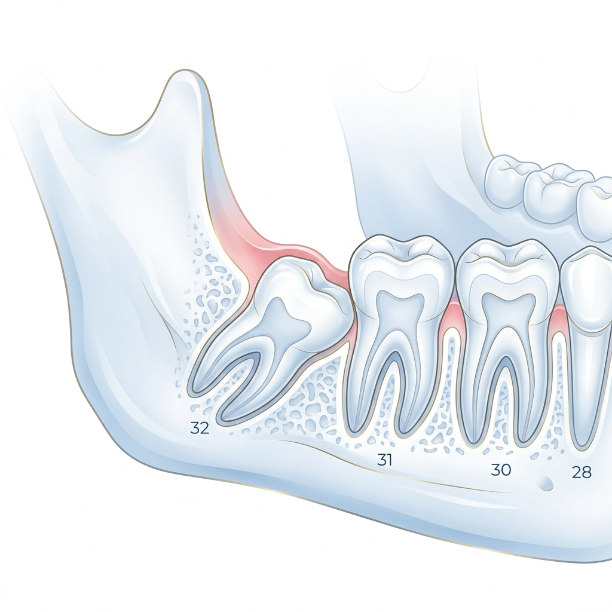
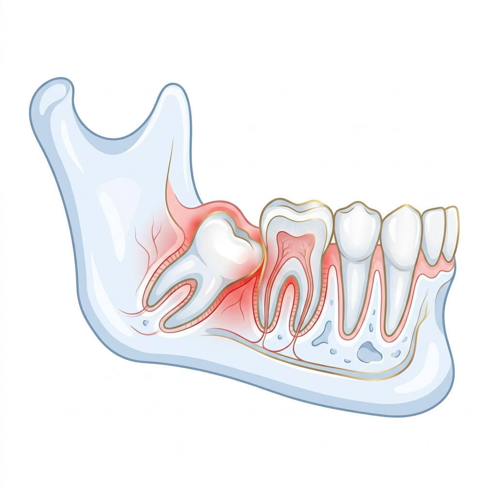
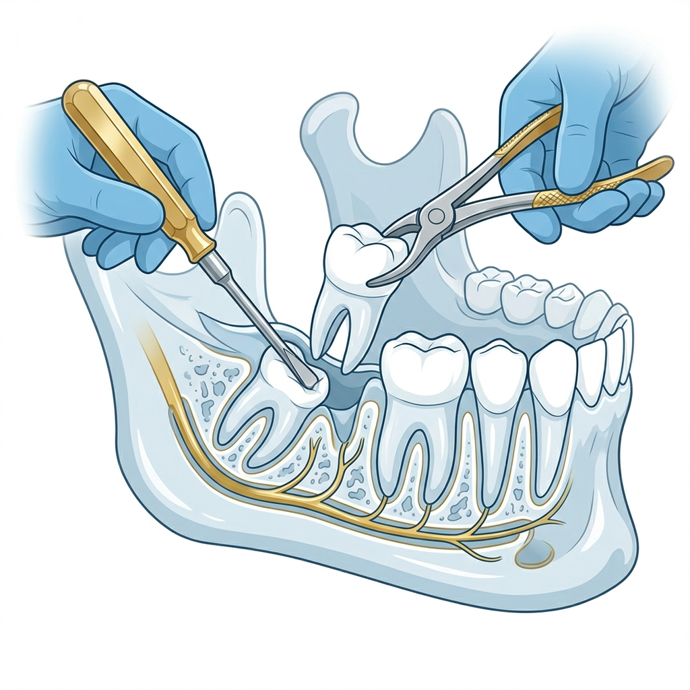
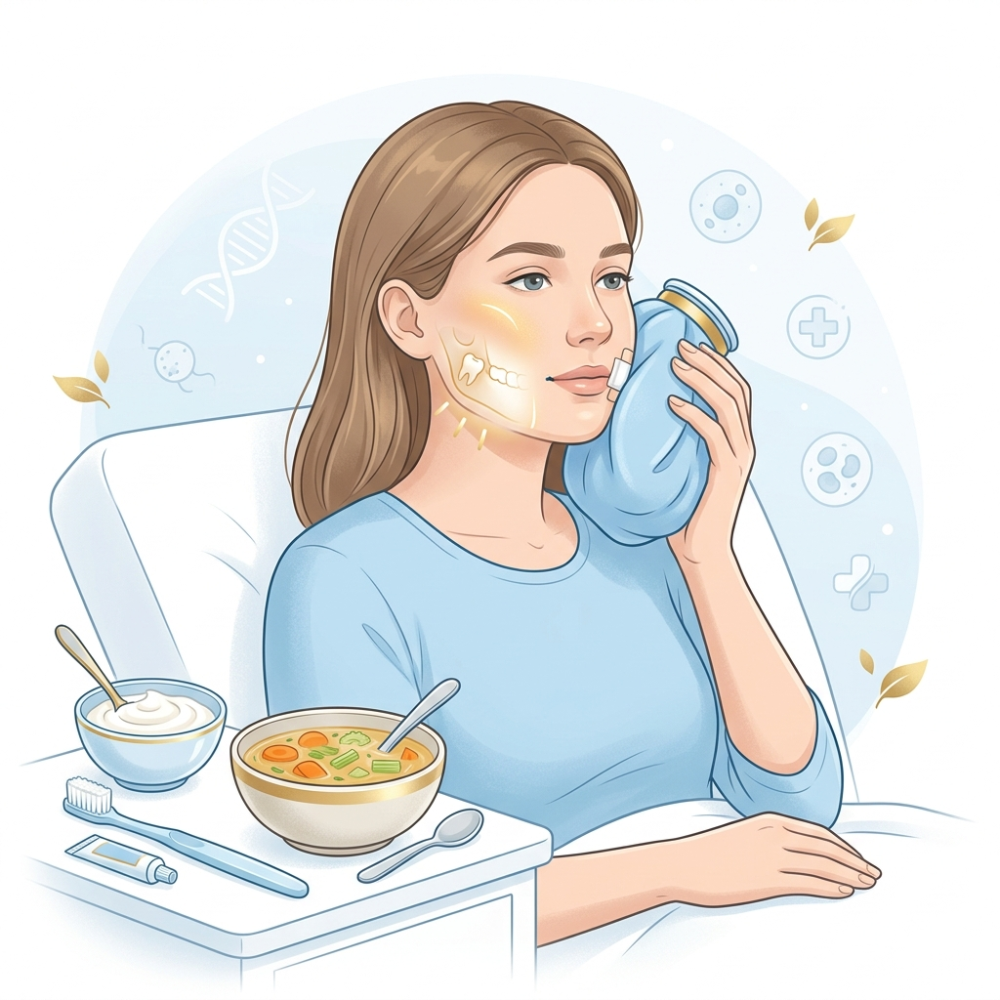
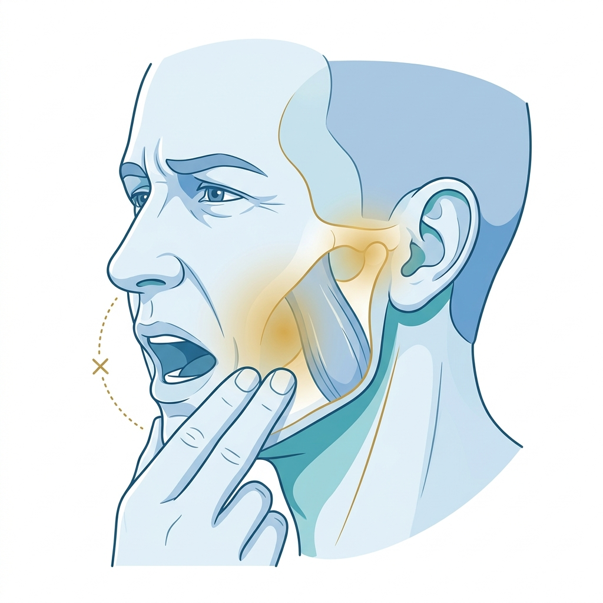
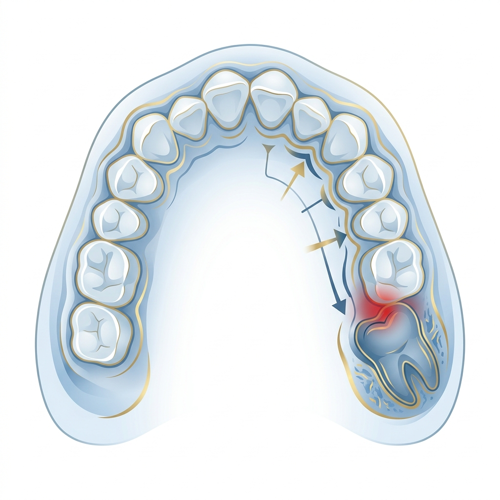
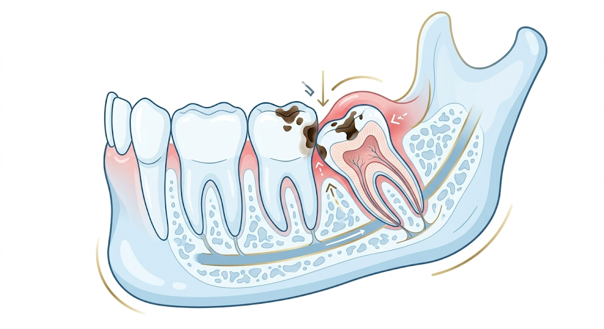
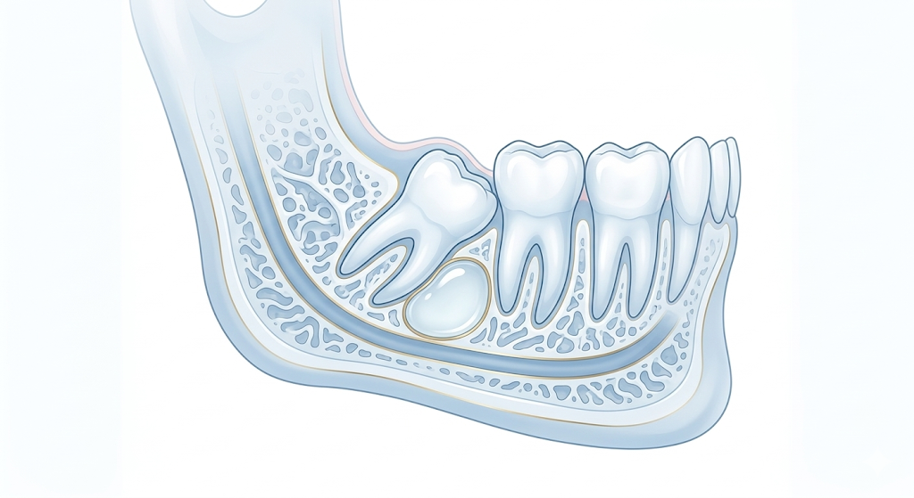
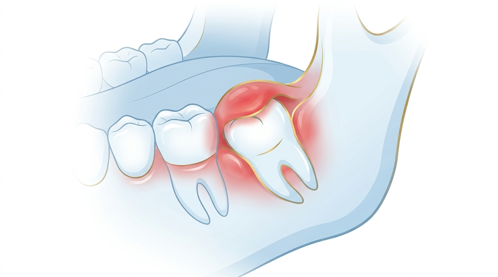

Wisdom Teeth Removal
Safe, precise extraction of wisdom teeth to protect your oral health, performed with care, comfort, and expert surgical skill.

What is Wisdom Teeth Removal?
Wisdom teeth removal is a surgical procedure that involves the extraction of one or more wisdom teeth — the last set of molars that typically emerge in the late teenage years or early twenties.
Wisdom teeth may cause problems if they don't have enough space to grow or if they grow in an improper position, which can lead to pain, infection, and other dental issues. As a result, many people may require wisdom teeth removal to maintain their oral health and prevent further complications.
Signs You May Need Wisdom Teeth Removal
Recognizing the warning signs early can help prevent complications and preserve your oral health. Here are the key indicators to watch for.

! Pain & Discomfort
Persistent pain or discomfort in the back of the mouth, particularly around the area where wisdom teeth are emerging or impacted. This is often the first and most noticeable sign.

2 The Extraction Process
Our surgical team carefully removes the impacted or problematic wisdom tooth using precise techniques and advanced instruments. The procedure is performed under local or general anesthesia for your complete comfort.

✓ Recovery & Healing
With proper post-care, including rest, ice packs, soft foods, and gentle oral hygiene — most patients recover within 3–5 days. We provide complete guidance to ensure a smooth healing process.
Common Indicators for Removal






If you experience any of these symptoms, or if your dentist notices issues during an exam or X-ray, wisdom teeth removal may be recommended. Regular dental check-ups are essential for early detection.
Post-Treatment Care
Proper post-treatment care is crucial to ensure a speedy and smooth recovery after wisdom teeth removal. Here are the guidelines we recommend:
- Rest: Plan to take it easy for at least 24 hours after the procedure. Avoid physical activity, heavy lifting, and anything that could dislodge the blood clot from the extraction site.
- Ice packs: Apply ice packs to your cheeks for the first 24 hours to help reduce swelling and discomfort.
- Pain management: Take pain medications as prescribed by our team to manage any discomfort during recovery.
- Oral hygiene: Brush your teeth gently and avoid the extraction site for the first few days. You may use a saltwater rinse to keep the area clean and promote healing.
- Diet: Stick to a soft food diet for the first few days. Avoid hot, spicy, or hard foods that may irritate the extraction site. Drink plenty of fluids but avoid using straws, as the suction can dislodge the blood clot and delay healing.
- Follow-up appointments: Attend all scheduled follow-up appointments to ensure proper healing and monitor for any complications.
- Watch for warning signs: If you experience excessive bleeding, severe pain, or signs of infection, contact us immediately.
Frequently Asked Questions
The procedure is performed under local or general anesthesia, so you should not feel pain during the extraction. Afterward, some soreness, swelling, and mild discomfort are normal and can be managed effectively with prescribed pain medication and ice packs.
Most people feel significantly better within 3–5 days. Full healing of the extraction sites typically takes about 1–2 weeks. Following post-care instructions closely, such as resting, maintaining a soft diet, and avoiding straws — helps ensure a smooth recovery.
Not necessarily. If your wisdom teeth are fully erupted, properly positioned, and don't cause any issues with spacing or hygiene, they may not need removal. However, impacted, partially erupted, or misaligned wisdom teeth often require extraction to prevent complications.
Leaving impacted wisdom teeth untreated can lead to recurring infections, damage to neighboring teeth, cyst formation, jawbone deterioration, and increased difficulty with extraction later. Early removal is generally safer and involves a faster recovery.
Stick to soft foods like yogurt, mashed potatoes, smoothies, soups, and scrambled eggs for the first few days. Gradually introduce semi-soft foods as you heal. Avoid crunchy, hard, spicy, or very hot foods, and do not use straws as the suction can disturb the healing process.
Wisdom teeth typically begin emerging between the ages of 17 and 25. Removal is often easier and recovery faster in younger patients because the roots haven't fully developed. However, wisdom teeth can be removed at any age if they're causing problems.
Concerned About Your Wisdom Teeth?
Don't wait for symptoms to worsen. Schedule a comprehensive evaluation and let our specialists assess your wisdom teeth health.
Get in Touch
We're ready to discuss your personalized care plan. Fill out the form or reach us directly.